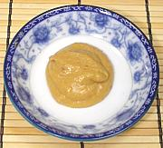

 |
Mustard-Miso SauceJapan | ||||
| Serves: Effort: Sched: DoAhead: |
Many ** 20 min Yes |
A sauce used in Japan with fried tofu, grilled chicken, grilled fish and the like - variously made. This is powerful stuff and for some uses you may want to mix a dab into soy sauce as is often done with wasabe paste. | |||
|
1 2 2 1/2 1/2 1/2 |
T T T t T T |
Sesame Seeds Mustard Powder (1) Shiro Miso (2) Sesame Oil Soy Sauce Mirin |
A variation, Mustard-Miso Cream Sauce, mixes whipped cream into the mustard sauce, about half and half. Make: - (20 min)
|